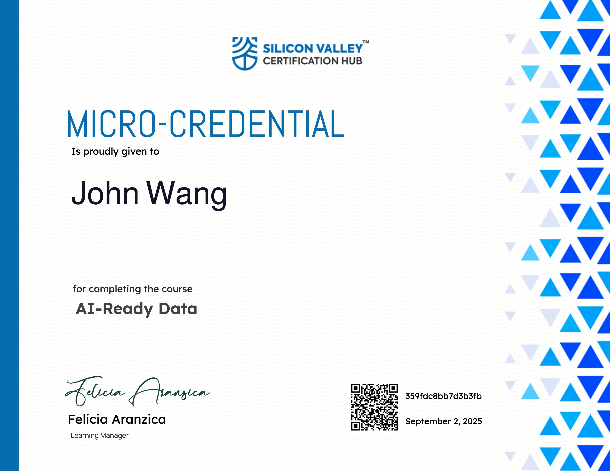

John's Data Certificates
- Product Management
- Governance
- Artificial Intelligence
- Data Lakehouse
- Apache Iceberg
- Apache Iceberg from Dremio by Alex Merced
- DataOps with Apache Iceberg from Dremio by Alex Merced
- Apache Iceberg for Analytics and Machine Learning from Dremio by Andrew Madson
- Apache Polaris from Dremio by Andrew Madson
- Introduction to Apache Iceberg from Pluralsight by Russ Thomas
- Leveraging Apache Iceberg Catalogs from Pluralsight by Pinal Dave
- Understanding Apache Iceberg Architecture from Pluralsight by Russ Thomas
- Rollbacks, Time Travel, and Disaster Recovery with Apache Iceberg from Pluralsight by Russ Thomas
- Dremio
- Neo4j
Product Management (1)
Data Product Fundamentals from Dremio by Andrew Madson
Governance (1)
Data Governance with Dataplex Universal Catalog from Google Cloud

Artificial Intelligence (1)
AI-Ready Data from Silicon Valley Certification Hub by Kash Mehdi

Data Lakehouse (1)
Databricks Accredited Lakehouse Fundamentals from Databricks


Apache Iceberg (8)
Apache Iceberg from Dremio by Alex Merced

DataOps with Apache Iceberg from Dremio by Alex Merced

Apache Iceberg for Analytics and Machine Learning from Dremio by Andrew Madson
Apache Polaris from Dremio by Andrew Madson
Introduction to Apache Iceberg from Pluralsight by Russ Thomas
Leveraging Apache Iceberg Catalogs from Pluralsight by Pinal Dave
Understanding Apache Iceberg Architecture from Pluralsight by Russ Thomas

Rollbacks, Time Travel, and Disaster Recovery with Apache Iceberg from Pluralsight by Russ Thomas
Dremio (4)
Dremio Fundamentals (Cloud) from Dremio
Dremio Fundamentals (Software) from Dremio
Dremio-Powered AI Agents from Dremio by Alex Merced
Dremio MCP Server from Dremio by Alex Merced

Neo4j (2)
Neo4j Fundamentals from Neo4j

Neo4j & GenerativeAI Fundamentals from Neo4j